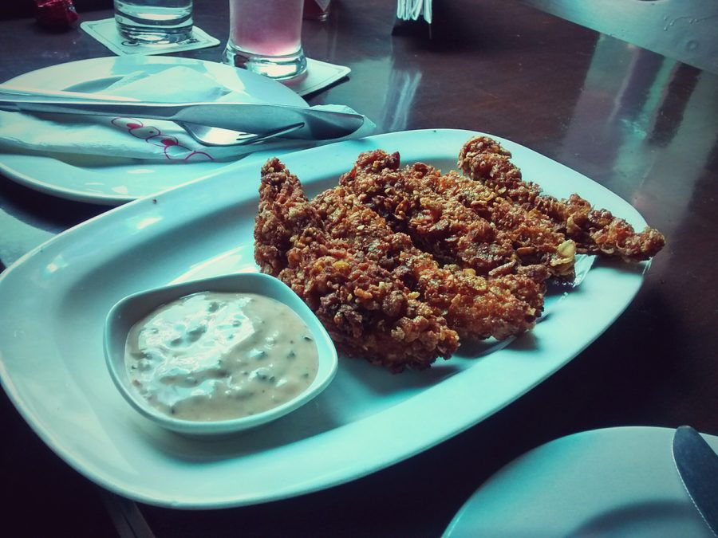

Corn Flake Chicken

Photo: Deepak Giri (CC BY-SA 4.0)
A baked, breaded chicken dish in which boneless skinless breasts are dipped in buttermilk and coated with a seasoned crumb of crushed corn flakes, Italian dressing mix, and parmesan cheese.
Directions
- Combine first 4 ingredients in a shallow dish. Dip breast in milk, roll on crumb mixture, place on a lightly greased baking dish. Bake at 375 degrees for about 18 minutes.
- In a shallow dish, combine the crushed corn flakes, Italian dressing mix, grated parmesan cheese, and parsley flakes.
- Dip each chicken breast in the buttermilk, then roll it in the crumb mixture to coat.
- Place the coated breasts on a lightly greased baking dish.
- Bake at 375°F for about 18 minutes.
Goes well with
https://lizotte.cool/recipe/corn-flake-chicken.html